Социально-экономическое положение района
Отчетный доклад главы администрации муниципального района «Тарусский район»
«Об итогах работы органа распорядительно-исполнительной власти муниципального района в 2014 году и задачах на 2015 год»
Уважаемый Николай Викторович! Уважаемые жители Тарусского района, коллеги!
Ушедший год для района в целом был результативным: многое из запланированного нам удалось реализовать. Как и в предыдущие годы, мы старались работать эффективно, системно, активно взаимодействуя с депутатским корпусом, администрациями городского и сельских поселений, руководителями жилищно-коммунального и социального комплекса, бизнес-сообществом, а также Правительством Калужской области и территориальными федеральными органами власти в Калужской области.
В консолидированный бюджет Тарусского района поступило 455 млн.рублей. Это 104% к уровню прошлого года. Налоговые доходы поступили в сумме 169 млн.рублей, темп их роста составил 119%. Основными источниками доходной части консолидированного бюджета в 2014 году стали:
- налог на доходы физических лиц в размере 91 млн.рублей, что составляет 42% от общего объема 217 млн.рублей налоговых и неналоговых поступлений (темп роста 112,4%)
- налог на имущество физических лиц и земельный налог – 43 млн.рублей – 19,9%
- доходы от продажи и аренды земельных участков, государственная собственность на которые не разграничена – 37 млн.рублей, или 17,1%
- налоги на совокупный доход – 23 млн.рублей или 10,6%
Как и в предыдущие годы, результативно работала комиссия по укреплению бюджетной и налоговой дисциплины, что также способствовало накоплению бюджета.
Объем расходов консолидированного бюджета составил в 2014 году 462 млн.рублей, что на 2 млн.рублей меньше предыдущего года. Этот минус связан с недополучением из областного бюджета запланированных 12,2 млн.рублей дотаций: в том числе поселениям в размере 10,2 млн.рублей, району – 2 млн. рублей.
По - прежнему бюджет сохраняет и даже усиливает социальную направленность. Удельный вес расходов на финансирование деятельности учреждений сферы образования, культуры, социальной политики составил 67,7%, что на 3,7% больше чем в 2013 году.
Наибольший удельный вес в общей сумме расходов составляют расходы на образование - 201 млн.рублей, социальную политику – 84 млн.рублей, культуру – 25 млн.рублей. Отрадно отметить, что в 2014 году доля расходов консолидированного бюджета, использованных в рамках муниципальных программ, составила 97%, что почти в 1,5 раза больше уровня 2013 года.
Темпы развития экономики нашего района, по прогнозу минэкономразвития области, должны позволить нам через два года в 2017 году стать - бездотационными. Как показал анализ, за последние 5 лет экономика района в среднем росла на 5-6 процентов в год. По предварительной оценке, и в 2014 году район также имеет положительную динамику в социально-экономическом развитии. При оценочной численности населения на начало 2015 года - 15100 человек - в 2014 году, по сравнению с прошлым годом, рождаемость выросла на 5,9%, смертность снизилась на 3%. Количество молодых пар, решивших создать семью выросло почти на четверть. Количество разводов сократилось на 13%. Открытый на День города сквер молодоженов расширил отделу ЗАГСа возможности для проведения торжественных церемоний бракосочетания.
 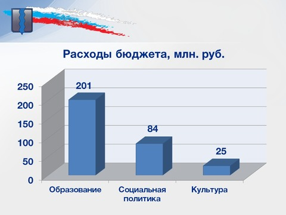
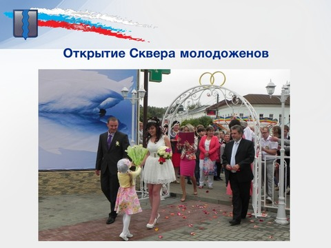
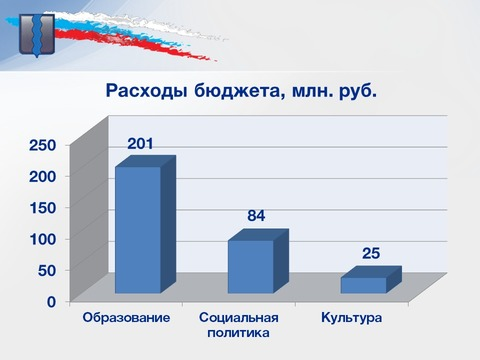
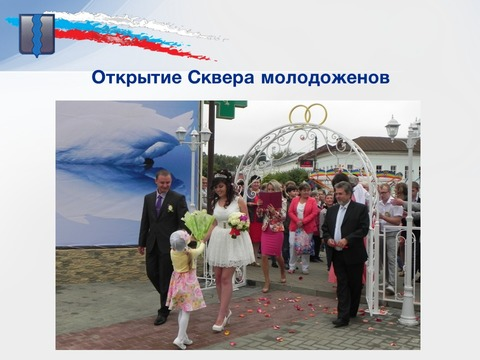
{kind=link}
{kind=link}

Служба занятости населения регистрирует самый низкий уровень официальной безработицы в районе за последние двадцать три года. На 1 января т.г. количество безработных составило 27 человек при 840 вакансиях рабочих мест, заявленных работодателями района. Из 211 человек, обратившихся в службу занятости в поисках работы, две трети было трудоустроено.
Для снижения напряженности на рынке труда 10 человек было трудоустроено на общественные работы, 14 направлены на профобучение, 68 подростков в летнее каникулярное время было занято на временных работах.
За 2014 год предприятиями и организациями всех отраслей отгружено товаров и оказано услуг на сумму 1 млрд.200 млн.рублей, - с ростом к предыдущему году в действующих ценах на 101%, а по крупным промышленным предприятиям рост составил- 124%. Продукция, выпущенная малыми промышленными предприятиями, выросла на 140%.
В развитие и сохранение экономического потенциала района в минувшем году внесли весомый вклад коллективы СКБ КП ИКИ РАН (руководитель А.Н.Наумов), ООО «Энергосберегающая компания «ТЭМ» (руководитель С.В.Кобелянский), ОАО «Тарусский молочный завод (руководитель А.С.Акопян), ООО «Мастер+2» (руководитель А.В.Добычин), ЗАО «Армодекор» и ООО «Борус» (руководитель А.В.Абрамов) и другие.
В августе прошлого года состоялась презентация промышленной площадки в с.Некрасово, где уже успешно работают малые предприятия: «ООО «МЕРДИ» , которое производит остановочные павильоны, дорожные знаки и ограждения, строительные леса и садовые парники и ООО «Теплоинвест» - производит оборудование для работы с двухкомпонентным пенополиуретаном, на которых трудится более 30 человек. И очень хорошая новость: в 2014 году в г.Тарусе на площадях бывшего кирпичного завода ООО «Стройкерамика» организовано новое предприятие ООО «Эколес» (генеральный директор Смирнов Борис Владимирович) по производству из местного леса продукции, которая направляется для производства мебели. Уже сегодня здесь работает 115 человек со средней заработной платой 25 тысяч рублей.
Продолжаются работы по проектированию и строительству в г.Тарусе фармацевтического предприятия ООО НПК «Северагропроект».
В сельскохозяйственной отрасли продолжили работу ООО «Трубецкое», ООО «Лопатинское», ЗАО «Заря», а также ООО «Тарусская птицефабрика» - пока единственное в области предприятие по производству куриного яйца. В 2014 году она произвела его 32 млн. 423 тыс. штук.
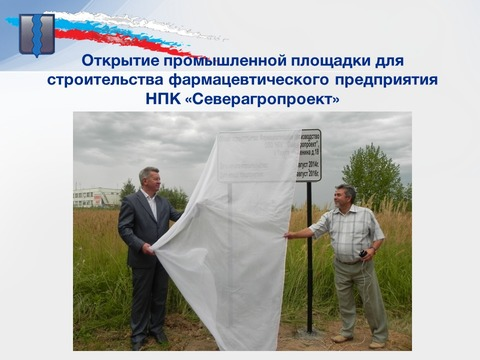 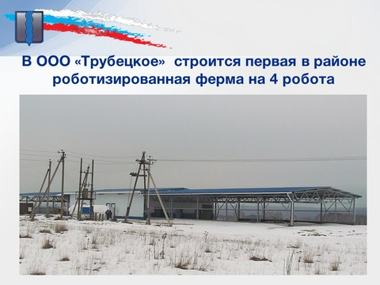 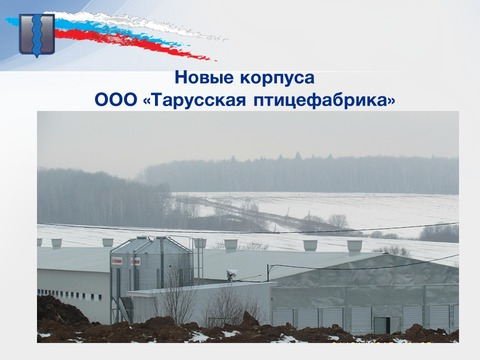 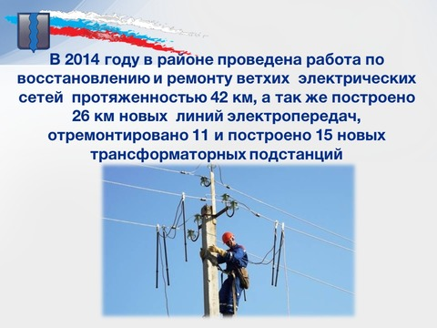{kind=link}
{kind=link}
{kind=link}
{kind=link}
При сохранении посевных площадей в объеме 2013 года в 2014 году зерна было намолочено 2158 тонн или 152% к прошлому году. В то-же время на 16% сократился валовый надой молока (2470тонн) при сокращении численности крупного рогатого скота во всех категориях хозяйств на 8%.
В 2015 году планируется:
- в ООО «Трубецкое» запустить в эксплуатацию первую в районе роботизированную ферму на 4 робота, где уже построен модуль на 240 голов дойного стада, закуплено и установлено оборудование
- в ООО «Тарусская птицефабрика» увеличить производство яиц в 1,5 раза за счет пуска в эксплуатацию уже построенного птичника и продолжить строительство еще двух аналогичных корпусов птичников
- весной крестьянско-фермерским хозяйством Семенова планируется ввод в эксплуатацию теплиц для выращивания овощей закрытого грунта и зелени в д.Романовка
В целом в 2015 году предстоит произвести в хозяйствах всех категорий 2674 тонны зерна, 4600 тонн молока, в том числе 2584 тонны в сельскохозяйственных организациях района.
Средняя заработная плата в промышленности составляет по крупным предприятиям – 22.330 рублей, по малым – 14.670 рублей. В течение 2014 года из разных источников финансирования привлечено инвестиций на сумму 520 млн.рублей.
Строительство в общую копилку экономики района внесло 50 млн. рублей, что в 2 раза больше 2013 года, малые предприятия этой отрасли выросли в 3,2 раза. В отчетном периоде за счет частных инвенстиций построено 109индивидуальных домов и введено больше 17,700 квадратных метров жилья, что составило 127% к установленному губернатором годовому заданию.
В отчетный период продолжилась газификация района. Построены и введены в действие 15,6 км газопроводов (5,4 км высокого давления, 2,5 км - низкого давления, 7,7 км – уличных газопроводов). Газифицировано 157 домов и квартир. Начата прокладка межпоселкового газопровода протяженностью 17 км из д.Сашкино Ферзиковского района в с.Петрищево Тарусского района. В 2015 году газ должен поступить в дома и квартиры с.Петрищево, п.Петрищевский, д.Муковня и таким образом в основном завершится газификация всех поселений района. В планах 2015 года также проектирование уличных газопроводов в д.Шишкино, д.Похвиснево, д.Сутормино, д.Ям и поселке Лесничество г.Таруса.
Отделом ведения кадастра градостроительной и земелеустроительной документации: в 8 сельских поселениях были разработаны и утверждены решениями Сельских Дум генеральные планы поселений.
По двум поселениям: «Село Вознесенье» и «Деревня Алекино» решения будут приняты в этом году после рассмотрения 27 января т.г. на заседании Правительства Калужской области.
В 2014 году в районе проведена большая работа по восстановлению и ремонту ветхих электрических сетей протяженностью 42 км, а также построено 26 км новых линий электропередач, отремонтировано 11 и построено 15 новых трансформаторных подстанций.
Тем не менее, проблема частых отключений электроэнергии, особенно при неблагоприятных погодных условиях, остается очень острой в районе. Хочется надеяться, что ПО «Обнинские электросети» филиала «Калугаэнерго», на балансе которых находятся основные объекты электрохозяйства, и в наступившем 2015 году не уменьшат производственную программу энергоремонтов по нашему району.
В отчетном периоде была продолжена работа в рамках областной целевой программы «Чистая вода». На условиях софинансирования (90% областной бюджет, 10%- местный бюджет) было отремонтировано 6 км водопроводных сетей. 1 км 100 метров канализационных сетей, установлено 9 водопроводных колонок и 67 канализационных колодцев. На эти цели направлено около 8 млн.рублей.
По программе энергосбережения и повышения энерго эффективности удалось привлечь 12 млн. рублей средств, в том числе 3,6 млн.рублей из областного бюджета. Отремонтировано 800 метров теплосетей, произведен капитальный ремонт кровли в четырех домах на площади 2750 кв.метров.
В рамках энергосервисного контракта привлечено 7,6 млн. рублей частных инвестиций Калужской компании «Пандора» в проект по замене 642 двух уличных светильников на светодиодные в городе Тарусе. Это позволило только за период с августа по декабрь 2014 года значительно (в четыре раза!) сэкономить потребляемую электроэнергию.
С участием регионального центра энергоэффективности Калужской области заменено и установлено 156 светильников в детских, учебных и административных учреждениях района.
Продолжалась работа по энергосбережению в жилом фонде. Установлены и введены в эксплуатацию 97 общедомовых приборов учета электроэнергии в многоквартирных домах. А также 252 прибора учета холодной воды и 83 прибора горячего водоснабжения в квартирах.
Уважаемые депутаты Районного Собрания!
Оценивая прошедший почти пятилетний период нашей с вами совместной работы по развитию социально-экономического потенциала в районе, хочу отметить некоторые основные результаты.
В 2010-2011 годах мы с Вами решили проблему с детскими садами, построив новое здание д/с «Малышок» на 5 групп (силами треста «Коксохиммонтаж») и открыв две детсадовские группы в Волковской начальной школе и одну группу в Тарусской средней школе №2, и обеспечили район универсальными спортивными площадками, построив их 5 на селе и 3 в городе.
В 2012-2013 годах получили в подарок от Исмаила Ахметова отремонтированное здание для занятия детей в художественном отделении школы искусств, построили физкультурно- оздоровительный комплекс «Лидер» стоимостью 170 млн.рублей и городскую котельную стоимостью 20 млн.рублей, открыли за четыре года четыре памятника знаменитым тарусянам, активно занимались развитием учреждений культуры, объектов событийнного и сельского туризма, ремонтом внутридворовых территорий и подъездов, возродили сельские спортивные игры.
2014 год стал годом активного строительства и ремонта муниципальных дорог, 100%-ного обеспечения бесплатными земельными участками под строительство жилья 160 многодетных семей, прорыва в контроле целевого использования собственниками земель сельхозназначения.
В 2014 году за счет средств дорожного фонда, областного, районного и местного бюджетов было отремонтировано свыше 20 км автодорог областного, районного и местного значения с твердым покрытием на сумму более 100 млн.рублей.
Главный успех – ремонт стоимостью 25 млн.рублей 5 километрового участка областной дороги Барятино-Роща в щебеночном исполнении и 1,8 км центральных улиц в этих селах – в асфальтобетоне.
Была закончена капитальная реконструкция 2,4 км участка дороги Лопатино-Хлопово в рамках Федеральной программы ремонта сельских межпоселковых дорог. На эти цели было израсходовано вместе с проектом около 43 млн.рублей, в т.ч. 36 млн.рублей из областного бюджета. Дополнительно за счет областного бюджета отремонтированы участки дорог в д.Кресты, Таруса-Алекино, Волковское-Некрасово. За это огромное спасибо министерству дорожного хозяйства области и лично министру Ринату Хадиевичу Набиеву, нашей обслуживающей организации «Дорстройсервис» и ее руководителю Сулейменову Сайлаубаю Жайлаубиевичу.
За счет районного бюджета был произведен ремонт 3 км автодороги Таруса-Любовцово, а участок Любовцово-Бояково был отремонтирован за счет средств жителей деревни Бояково.
За счет средств дорожного фонда и собственных бюджетов были отремонтированы дороги целого ряда поселений, по улицам Центральная в с. Волковское-3 км, и 0,3км в с.Лопатино, улица Цветаева-1,4км и ул.Строителей- 0,3км, проведены работы по асфальтированию ул.Ленина и Живова в городе Тарусе. Также в Тарусе был проведен ямочный ремонт на площади 1630 кв.метров по улицам Р.Люксембург, К.Либкнехта, Горького, Пролетарская, Ленина, Серпуховское шоссе, переулку Победы, проложен тротуар по ул.Луначарского, отремонтирована дворовая территория по ул.Ленина дом 17.
За счет внутренних ресурсов района проведены подготовительные работы и частично отсыпана дорога 2,5 км к д.Толмачево, восстановлена плотина и проезд в д.Хлопово (0,3 км), выполнена подготовка дороги и частично отсыпана до д.Аксинино (1,5км), частично отсыпана дорога до д.Вятское (1 км), отсыпана дорога до д.Залужье (0,8км) Все это в СП «Село Лопатино».
В СП «Село Петрищево» построен переезд в д.Сивцево (0,5км), завершено строительство подъезда к д.Головино (0,5км), отремонтирована дорога до д.Муковня (1 км).
В СП «Деревня Алекино» построена дорога до д.Крюково 1,3 км, отремонтированы дороги до д.Марфино (3,7км), д.Бортники (0,5км).
В СП «Село Кузьмищево» построена плотина и переезд в д.Больсуново (0,5км).
В СП «Село Барятино» отремонтировна улица Заречная (0,3км).
В СП «Село Вознесенье» завершено строительство дороги до д.Яблоново (2,6км).
Всего за 2014 год было построено и отремонтировано около 18 км сельских дорог, и пожалуй самое главное состоит в том, что все эти дороги и улицы строились и ремонтировались в рамках частно-муниципального партнерства. Я хочу выразить большую благодарность всем активным жителям этих деревень за такое важное и нужное сотрудничество, от которого выигрывают и сами жители, и местные власти.
Надеюсь, что в 2015 году это сотрудничество продолжится.
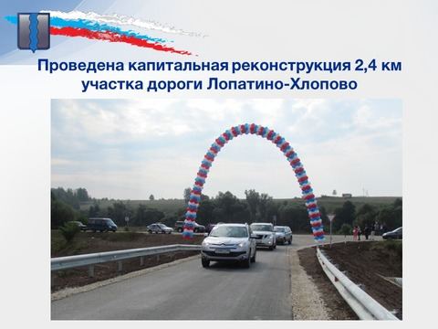 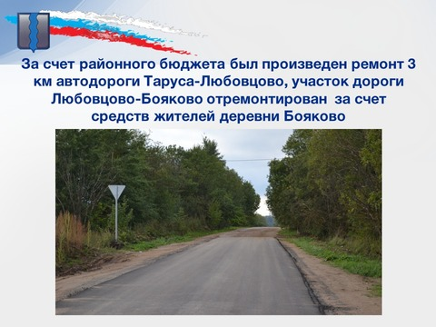 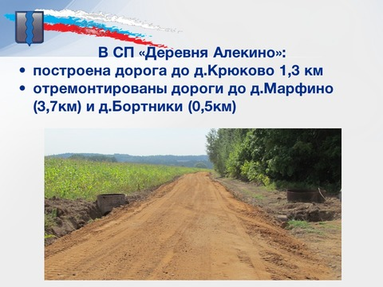 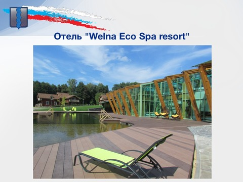{kind=link}
{kind=link}
{kind=link}
{kind=link}
В отчетный период на особом контроле администрации было обеспечение населения перевозками общественным транспортом между населенными пунктами района. По 6 ежедневным маршрутам осуществлялось от 4 до 6 рейсов. На возмещение затрат перевозчикам было выделено из районного бюджета более 2,5 млн.рублей, что на 1 млн. руб. больше, чем в 2013 году.
Благодаря нашей совместной работе и город и сельские поселения с каждым годом становятся более благоустроенными. Это отмечают и сами тарусяне и гости нашего района.
Обидно, что наши поселения в прошлом году очень слабо участвовали в областном конкурсе на самое благоустроенное поселение в своих номинациях. А город Таруса участвуя, впервые за последние годы не оказался в числе призеров этого конкурса. В условиях острого дефицита бюджета наших поселений дополнительные деньги в виде грантов были бы очень кстати. Надо делать выводы уважаемые руководители представительных и исполнительных органов местного самоуправления района. Это ваша сфера ответственности.
Накануне Нового года мы провели второй районный конкурс среди сельских поселений на лучшее праздничное оформление населенных пунктов. Победителем в этот раз признано СП «Село Некрасово». Поздравляем!
Розничный товарооборот вырос в прошлом году на 16% и составил 1 млрд. 420 млн.рублей. Объем платных услуг вырос на 18% и составил 8500 рублей на душу населения.
Растет уровень жизни населения. Средняя заработная плата работников в экономике района выросла на 4 процента и составила 20955 рублей. Средняя величина прожиточного уровня, установленная Правительством Калужской области в 2014 году в размере 7178 рублей, превышает размер прошлого периода на 14 процентов. Среднемесячная заработная плата превышает прожиточный уровень в 2,9 раза.
В целях социальной защиты населения предоставлялись адресные льготы и субсидии. Субсидией по оплате жилищно-коммунальных услуг воспользовалось 190 семей на сумму 2 млн. 543 тыс. рублей. Льготы по оплате услуг ЖКХ, согласно действующему законодательству, получили 3138 человек на сумму более 30 млн.рублей.
В минувшем году активное развитие получила одна из стратегических отраслей экономики района – внутренний въездной туризм и рекреация. Летом начал принимать гостей и отдыхающих после пуска СПА-центра оздоровительный экоспакомплекс «WELNA» на 100 мест.
В Тарусе построены и открыты кафе «Парус» на берегу Оки и «Тарусское время» с часами с боем на башне.
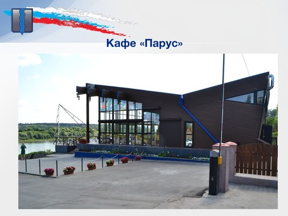 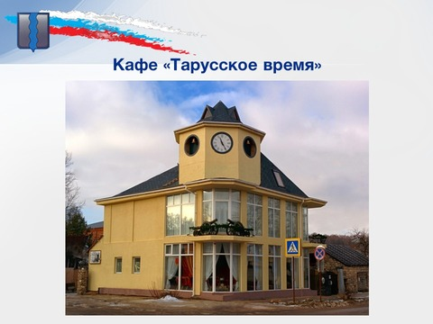 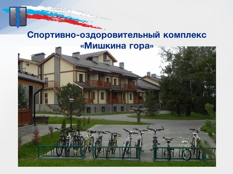 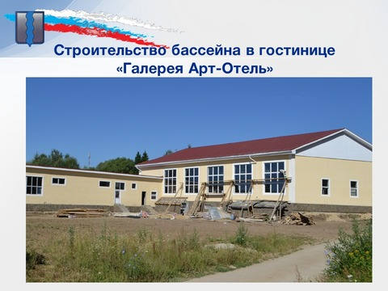{kind=link}
{kind=link}
{kind=link}
{kind=link}
В стадии завершения строительства и сдачи в эксплуатацию спортивно-оздоровительный комплекс «Мишкина Гора» в с.Волковское на 170 мест с бассейном (25х6 метров), горнолыжным спуском и канатным подъемником, открытой универсальной спортивной площадкой 20Х40м и отличным пляжем на берегу реки Ока.
Как и было запланировано, в 2014 году отремонтирована дорога к построенной в 2013 году гостинице «Галерея Арт-Отель» в районе Водоканала. В настоящее время здесь инвестором активно ведутся работы по газификации комплекса и завершению строительства 25 - метрового бассейна на 4 дорожки. Надеемся ко Дню района, 24 августа, он будет торжественно открыт.
Количество койкомест в 21 действующих пансионатах, гостиницах и базах отдыха достигло 1920. Инвестиции в основной капитал средств размещения увеличились по сравнению с прошлым годом более чем в 2 раза и достигли 450-ти млн.рублей.
Объем годового туристского потока, включая экскурсантов, уверенно перешагнул планку в 100 тыс.человек. Этому в какой-то мере способствовало мое интервью «Тарусские тропы» на федеральном телеканале Общественное телевидение России, сюжеты о Тарусе в программе «Малые города России» на этом же канале, которые демонстрировались перед отчетом.
Продолжает принимать гостей 21 агроусадьба, готовятся принимать в 2015 году еще 5.
Одним из индикаторов качества жизни нашего населения является своевременная и профессиональная медицинская помощь , которая оказывается в ГБУЗ КО «ЦРБ Тарусского района» со стационаром, поликлиникой, отделением «Скорой помощи», в Лопатинской амбулатории и на восьми ФАПах. В поликлинике ведется прием по 18 специальностям. В ЦРБ работает 26 врачей; 9 из них внутренние совместители, плюс 11 врачей – внешние совместители. Средних медицинских работников – 68. Укомплектованность врачами составляет 96%, средними медицинскими работниками 94%. В 2014 году было принято на работу 5 врачей: хирург, терапевт, стоматолог, травматолог, пульмонолог и 4 средних медработника. Сегодня по целевым программам обучается 14 человек, в том числе 9 в ВУЗах, 5 - в Калужском медколледже. За счет средств муниципального бюджета продолжают обучение 1 человек в Смоленской медицинской академии, 4 человека – в медколледже. Среднемесячная заработная плата в 2014 году составила у врача 35 тыс.рублей, у среднего медперсонала – 23668рублей, у младшего медперсонала – 15156 рублей.
Диспансеризацией было охвачено 1300 человек взрослого населения,1670- детского.
В сфере образования в 2014 году участвовали Тарусский многопрофильный техникум, 7 общеобразовательных школ, 5 дошкольных образовательных учреждений, 3 учреждения дополнительного образования детей.
Аттестат о среднем образовании с отличием получило 6 учащихся из 56 выпускников, или каждый десятый выпускник.
Но, наверное, главным успехом системы образования прошлого года было то, что нам удалось сохранить обучение 38 детей в Барятинской средней школе, здание которой является объектом историко-культурного наследия регионального значения. Было найдено компромисное решение, проведены работы по обустройству теплых туалетов , ремонту потолков в ряде классов, полной замене электропроводки и установке новых светильников. Новому руководству школы, педколлективу теперь нужно вместе с учащимися сделать все, чтобы эти усилия не пропали зря.
Также для создания комфортных и безопасных условий пребывания детей в 2014 году были проведены работы в Волковской начальной школе по капитальному ремонту системы водоотведения, в Вознесенской школе- по замене системы водоснабжения и водоотведения. Для обеспечения бесперебойной подачи тепла заменены газовые котлы в Лопатинской и Некрасовской школах. Для обеспечения антитеррористической защищенности в д/с «Малышок», «Солнышко», «Березка», в ТДДТ и Вознесенской школе установлены системы наружного видеонаблюдения. С этой же целью в Волковской, Лопатинской, Некрасовской школах установлены металлические входные двери.
В целях улучшения медицинского обслуживания детей в д/с «Аленушка», «Малышок», «Березка», «Солнышко» было закуплено медицинское оборудование.
Наши дети показывают не только хорошую успеваемость, но и участвуют в различных конкурсах, соревнованиях и олимпиадах.
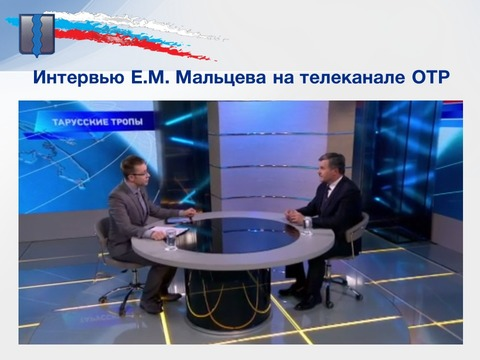 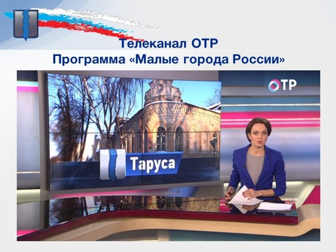 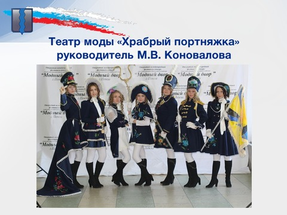{kind=link}
{kind=link}
{kind=link}

Так, наши учащиеся заняли 5 призовых мест на областных олимпиадах, из них 2 вторых места по русскому и английскому языку . Команда «Ефремовец» заняла 2 место в военно-спортивной игре «Зарница-Орленок 2014». У нашей команды II место в 67-й областной спартакиаде школьников по настольному теннису. А учащийся Тарусской средней школы №1 Борис Ломакин стал победителем Всероссийского конкурса «Юный архивист». Дмитрий Носач (учащийся этой же школы) стал победителем областной выставки «Юные техники – будущее инновационной Калужской области».
В системе дошкольного образования в феврале 2014 года в д/с «Березка» была открыта еще одна группа на 25 детей, что позволило обеспечить всех детей в возрасте от 3 до 7 лет местами в д/с.
В системе дополнительного образования детей было охвачено 1350 человек. То есть практически все наши дети, за редким исключением, посещают либо занятия в кружках и объединениях Тарусского Дома Детского Творчества, либо спортивные секции Детско-юношеской школы, либо отделения школы искусств.
В Доме Детского Творчества работают 22 объединения. В прошлом году очередного успеха добился театр моды «Храбрый портняжка», который стал лауреатом 1 степени Всероссийского фольклорно-этнографического фестиваля . Его руководитель Марина Владимировна Коновалова заслуживает самых добрых слов за свою деятельность!
Егор Горбунов стал лауреатом 1 степени международного фестиваля-конкурса «Таланты без границ».
Лиза Вепринцева заняла 1 место на Всероссийском творческом конкурсе детей с ограниченными возможностями «Осень вдохновения».
Учащийся Тарусской школы искусств Даниил Умнов – класс фортепиано (педагог Н.П.Устинова) во второй раз стал обладателем областной стипендии им.Н.П.Ракова.
Безусловно это предмет особой гордости родителей, тренеров, педагогов за своих детей. Они у нас замечательные. Наше дело сделать их жизнь счастливой.
Занятия детей и подростков в 10 спортивных отделениях ДЮСШ на только отвлекают детей от вредных привычек, но и приносят хорошие результаты на выездных соревнованиях.
Так на Кубке Мира по кикбоксингу в г.Анапе в сентябре 2014 года Анастасия Иванчук заняла 1 и 2 места. Дмитрий Вишкер – 3 место. На Чемпионате Европы среди юниоров по ушу-саньда Владимир Каштанов в мае в г.Бухаресте (Румыния) занял первое место.
На Первенстве России по ушу-саньда в г.Старый Оскол в апреле Анастасия и Владимир также стали призерами в своих весовых категориях, заняв, соответственно, 2 и 1 место, а в ноябре на Кубке России стали победителями. Тренирует наших чемпионов талантливый тренер Асатрян Эдуард Багдасарович.
Всего же на выезде 262 наших спортсмена приняли участие в 36 соревнованиях, а в самом спорткомплексе «Лидер» проведено 38 соревнований в которых приняло участие свыше 3 тысяч человек, в том числе Чемпионат России по тхэквондо среди студентов, IV открытый Всероссийский турнир по борьбе самбо.
Все последние годы администрация района уделяла большое внимание работе с молодежью, ее духовно-нравственному, патриотическому воспитанию, оздоровлению и занятости не только в учебный период, но и в каникулярное время.
В ряде школ района действуют музеи боевой славы, 17 декабря 2014 года в средней школе №2 им. ученого В.З.Власова был торжественно открыт после реконструкции музей Боевой Славы «Вечный огонь». Чтобы это событие состоялось, огромную помощь оказал наш куратор – министр конкурентной политики области Николай Викторович Владимиров. За что ему большое спасибо.
2014 год, являясь предшествующим годом 70- летию Победы советского народа в Великой Отечественной войне, был наполнен традиционными и новыми событиями и мероприятиями патриотической направленности. Такими, как, акции «Георгиевская лента», «Солдатский платок», «Поздравительная открытка», «Свет в окне», «Свеча памяти» и другими.
Празднование в мае Дня Победы и в декабре освобождения Тарусского района от немецко-фашистских захватчиков были такими масштабными по участию молодежи в этом году, что остается только порадоваться за нашу молодежь и сожалеть, что все меньше остается живых участников и ветеранов Великой Отечественной, которые могут передать свой героический и жизненный опыт молодому поколению. Поздравление ветеранов Войны и труда с 90 и 95 летними Юбилеями от имени Президента Российской Федерации, Губернатора области, администраций района и поселений стало доброй традицией в районе и важным элементом подготовки к 70 летию Великой Победы.
В марте-апреле 2015 года под руководством администрации учебных заведений учащимся техникума и общеобразовательных школ с участием местных администраций предстоит привести в порядок закрепленные территории всех 13-ти братских могил и воинских захоронений в районе.
 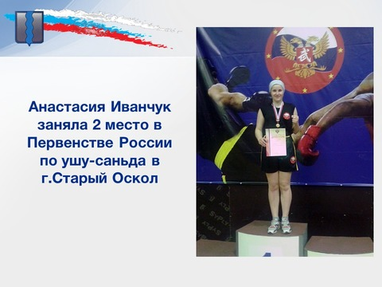
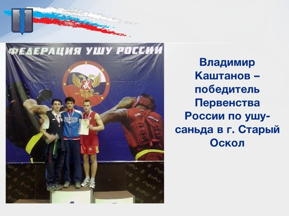
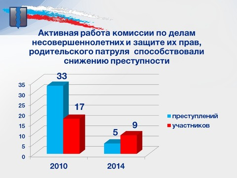
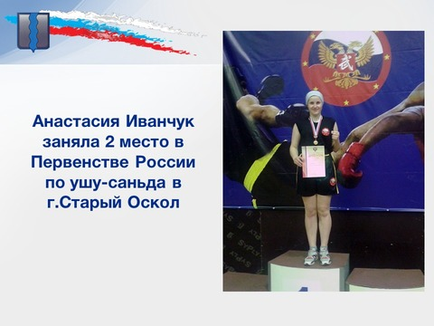
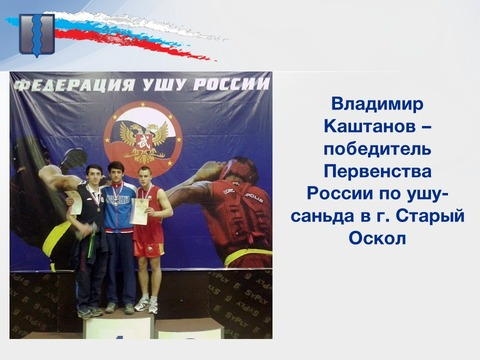
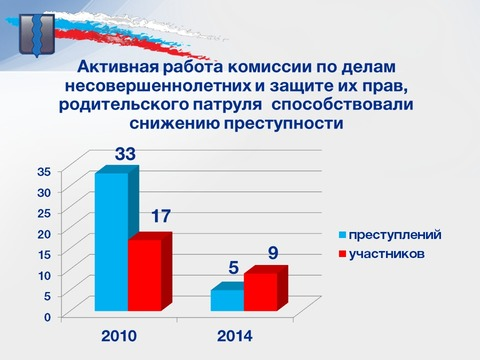
{kind=link}
{kind=link}
{kind=link}
Пропаганда здорового образа жизни, развитие физкультуры и спорта в районе, активная работа комиссии по делам несовершеннолетних и защите их прав, родительского патруля способствовали снижению преступности с 33-х преступлений и 17 участников в 2010 году до 5 преступлений и 9 участников в 2014 году.
Всего в 2014 году отдыхом, оздоровлением и временной занятостью было охвачено 1587 детей.
На эти цели израсходовано из районного бюджета 1 млн. 440 тыс.рублей, что на 250 тыс.рублей больше, чем в 2013 году. В недавних новогодних и рождественских социальных елках приняло участие более четырехсот детей, в рамках акции «Новогодний подарок» главы администрации района было вручено 535 сладких подарков детям из семей с низким уровнем дохода.
Как мы знаем, прошлый год в России был объявлен Годом культуры. Для Тарусского района он таковым является уже, пожалуй, четвертый год подряд. Одним из стимулов поступательного развития культуры как отрасли стало принятие в 2011 году решения о создании (когда был выбор между казенными и бюджетными) бюджетных учреждений в сфере культуры. Наш район оказался, пожалуй, единственным в области, кто пошел по, как оказалось сейчас, верному пути. Всем казенным учреждениям культуры области рекомендовано в 2015 году изменить тип учреждений на бюджетный.
Но мы пошли дальше и централизовали все сельские Дома культуры в РЦДН, а библиотеки в централизованную библиотечную сеть. Это позволяет осуществлять гибкое руководство и управление учреждениями культуры в районе.
Анализируя итоги культурной жизни района в 2014 году нельзя не отметить появление в РЦДН молодежной театральной студии «Пульс» под руководством О.И.Исаевой, которая с успехом представила на праздновании Дня города постановку спектакля «Про Федота - стрельца».
Продолжают свою деятельность пять народных коллективов. Работа одного из них – народного театра Лопатинского сельского Дома культуры в лице его руководителя Татьяны Николаевны Жуковой была отмечена министерством культуры области премией в размере 50 тыс.рублей. В ноябре большим праздничным концертом Лопатинский СДК и два его народных коллектива - театра и хора русской песни - великолепно отметили свой 40 летний юбилей.
Еще две юбилейные даты отмечались Центральной библиотекой – 155 летие со дня основания первой публичной библиотеки района и 10-летие центра правовой информации.
В условиях ограниченного финансирования продолжала улучшаться материально-техническая база учреждений культуры. Частичные ремонты проведены в сельского дома культуры с.Некрасово, д.Похвиснево, с.Волковское, д.Алекино. Ремонт кровли в Барятинском СДК на сумму 500 тысяч рублей осуществлен за счет областного бюджета с поддержкой нашего депутата в Законодательном Собрании Чигищева В.И.. Также 150 тысяч рублей областных средств были выделены для ремонта части фасада детской библиотеки им. Н.В.Богданова. А усилиями нашего мецената И.Т.Ахметова произведен капитальный ремонт входной группы в этой библиотеке.
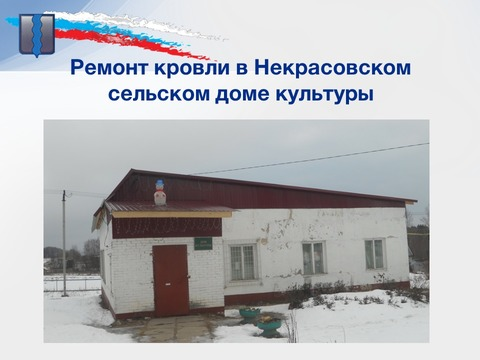 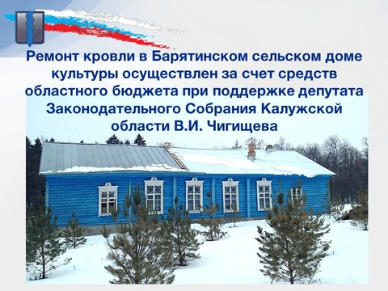 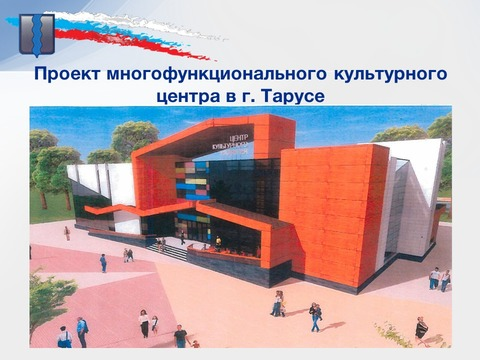 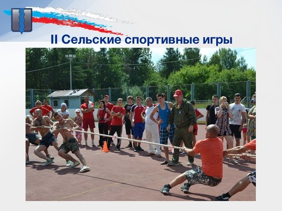{kind=link}
{kind=link}
{kind=link}
{kind=link}
2015 год – этот год столетия со дня рождения великого маэстро Святослава Рихтера. Таруса, безусловно, станет одним из центров юбилейных мероприятий и концертов. Губернатором Калужской области А.Д.Артамоновым принято решение о строительстве в г.Тарусе многофункционального культурного центра на условиях софинансирования 50% х 50% общей стоимостью 100 млн.рублей. Давайте поблагодарим нашего Губернатора за такой прекрасный подарок району и окажем ему поддержку на выборах 13 сентября 2015 года.
2015 год объявлен Годом литературы в России. У многих выдающихся писателей и поэтов с Тарусой связаны периоды жизни и творчества.
Памятник одному из них - русскому и советскому поэту Николаю Заболоцкому планируется установить на входе в киноконцертный зал в начале июля в Дни города по инициативе и на средства семьи Александра Владимировича и Любови Васильевны Щипковых. А в день Тарусского района 24 августа Исмаил Ахметов планирует открыть Дом литераторов, который строится в районе Дома отдыха «Серебряный век».
Привлечение к занятиям физической культурой и спортом широких слоев населения всегда было и остается в центре внимания администрации района. Успешно зарекомендовавшим себя проектом можно назвать проведение районной спартакиады среди предприятий и организаций, в очередной ( 3-й) спартакиаде приняло участие 9 команд.
В 2014 году призовые места распределились таким образом:
- 1 место – команда ТМТ
- 2 место – команда ДЮСШ
- 3 место – команда «Новая волна» администрации района
В день физкультурника, 10 августа, прошли вторые сельские спортивные игры – по девяти видам спорта, в которых приняли участие сельские спортсмены всех 10 поселений. Первое место заняла команда села Лопатино, второе место - команда села Барятино, третье место - команда деревни Похвиснево.
Пропаганда здорового образа жизни, насыщенность спортивных и культурных состязаний всегда присутствуют в традиционном слете работающей молодежи и членов их семей «Хомяковский брод», который прошел этим летом уже в 14-й раз. Уверен, что и 15-й слет в 2015 году состоится и пройдет не менее активно и интересно, чем предыдущие.
Координационным органом всех районных служб системы профилактики и противодействия злоупотреблению наркотическими средствами и психотропными веществами и их незаконному обороту на территории Тарусского района является антинаркотическая комиссия в работе которой активное участие принимают представители УФСКН России по Калужской области, МО МВД России «Тарусский», ЦРБ, отделов образования, культуры, спорта.
Финансирование муниципальной комплексной целевой программы по этому направлению осуществлено в 2014 году в полном размере.
Отчет о работе нашей комиссии на заседании областной антинаркотической комиссии в сентябре 2014 года был признан заслуживающим одобрения и наш опыт рекомендован для использования другими муниципальными комиссиями области.
Для расширения доступности и быстроты получения государственных и муниципальных услуг год назад в Тарусе был открыт филиал Калужского многофункционального центра «Мои документы». Спустя год филиалом оказывается уже 16 государственных и 3 муниципальные услуги.
Сорок жителей Тарусского района успешно прошли бесплатное обучение по программе «Электронный гражданин».
26 декабря на базе Лопатинской сельской библиотеки состоялось открытие удаленного рабочего места Тарусского филиала КМЦ «Мои документы». В нем будет оказываться 7 наименований наиболее востребованных услуг.
В отчетный период на более высокий уровень была поднята работа по защите интересов администрации и граждан в судебном порядке. Отделом правового обеспечения направлено в суд 8 исков, по пяти из них требования были удовлетворены. Интересы администрации представлялись в 76 судебных заседаниях различных инстанций.
В целях осуществления полномочий по муниципальному земельному контролю было проведено 7 проверок исполнения земельного законодательства юридическими лицами, 117 проверок исполнения земельного законодательства физическими лицами на площади 1247га. По результатам проверок 80 материалов направлены в Тарусский отдел Управления Росеестра и Управление Россельхознадзора по Калужской области. Из рассмотренных дел 63 лица привлечены к административной ответственности, наложено штрафов на общую сумму 58 тыс.рублей.
По сравнению с прошлым годом количество проверок увеличилось в 4 раза, сумма наложенных штрафов выросла в 6 раз, количество привлеченных лиц – в 5 раз.
Работа с заявлениями и жалобами граждан – неотъемлемая часть нашей ежедневной работы. В 2014 году в администрацию района поступило и своевременно рассмотрено 1304 обращения. Это на 4% меньше, чем в прошлом году. Из администрации Губернатора поступило 73 обращения, что на 22% меньше прошлогоднего периода.
На личный прием к главе администрации пришло 87 человек, что на 38, или 30%, меньше, чем в 2013 году. Практически не было в прошлом году повторных обращений по одним и тем же вопросам.
В прошлом году был существенно расширен и наполнен новыми разделами и страницами сайт администрации района. Если в 2012 -2013 годах суммарный объем информации, размещенной на сайте составлял 524 МБ, то в 2014 году он увеличился почти в 5 раз.
Количество посещений сайта составило в прошлом году 95 тысяч, среднее время нахождения на сайте - 3 минуты.
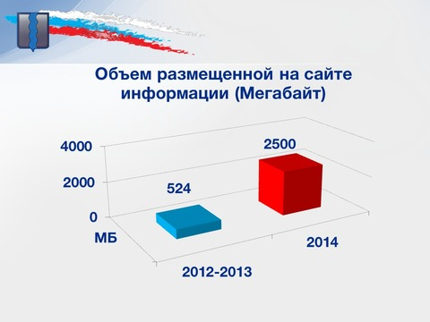 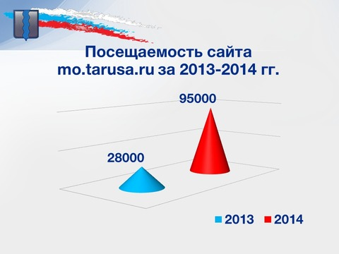 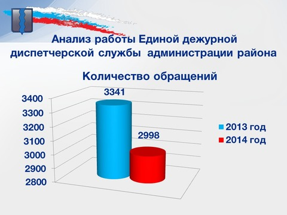 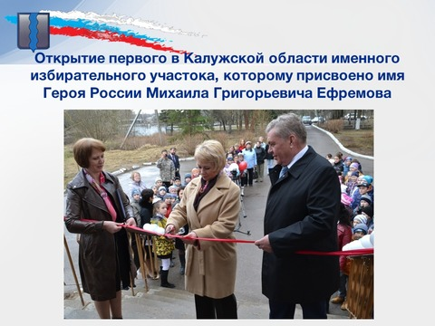{kind=link}
{kind=link}
{kind=link}
{kind=link}
Анализ работы Единой дежурной диспетчерской службы администрации района в 2014 году демонстрирует прогресс наших коммунальных служб в организации оперативного реагирования по ликвидации аварийных ситуаций, произошедших на объектах жизнеобеспечения района. Так, если в 2013 году службе пришлось реагировать на 3341 обращение, то в 2014 году только на 2998.
При общем снижении обращений на 12 процентов, значительно снизилось количество обращений и жалоб в ЕДДС на работу филиала ООО «Дорстройсервис» (в 2,9 раза), ТКП ЖКУ РАН (в 2,3 раза), МУП «ТЖДСЗ» (в 1,5 раза), Тарусского участка РЭС (в 1,4 раза), администраций сельских поселений (в 1,6 раза). В то же время выросло число обращений, относящихся к компетенции ПЧ-24 ( рост в 1,8 раза), Тарусского участка ГП «Калугаоблводоканал» (рост на 1,4%).
В сентябре 2015 года жители Тарусского района примут участие в выборах Губернатора Калужской области, депутатов областного Законодательного Собрания, депутатов Городской Думы города Тарусы и депутатов Сельских Дум 10 сельских поселений.
Организовывать и обеспечивать эту кампанию будет территориальная избирательная комиссия Тарусского района, совместно с 16 участковыми комиссиями на местах.
В апреле 2014 года в средней общеобразовательной школе №1 г.Тарусы был открыт первый в Калужской области именной избирательный участок, которому присвоено имя Героя России Михаила Григорьевича Ефремова.
В заключении доклада, хотелось бы поблагодарить всех присутствующих за совместную активную работу в 2014 году и нацелить на решение новых задач, поставленных Губернатором иПравительством Калужской области в условиях непростой социально-экономической ситуации, всесторонней поддержки производственных предприятий, в первую очередь малого и среднего бизнеса в сфере промышленности, строительства, сельского хозяйства, внести свой вклад в реализацию государственной политики импортозамещения продукции. А этих успехов можно добиться только работая сообща, помогая и поддерживая друг друга, работая в единой команде. Удачи нам всем в этой работе.
Благодарю всех за внимание.
Глава администрации МР "Тарусский район"
Е.М. Мальцев